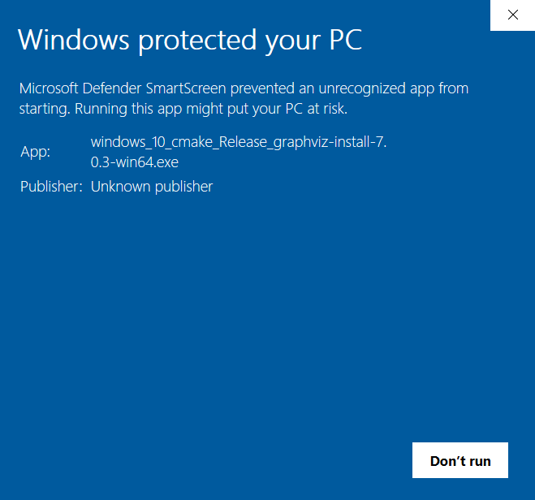
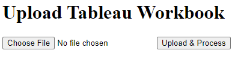

Usage¶
This tool can be run in a variety of ways, depending on your needs.
The first two options—downloading and running the prebuilt executable, or using the deployed Flask app on Render—are the easiest and most user-friendly choices, designed for general end users.
The remaining four options—running the Python script or Flask app locally, creating a custom executable with PyInstaller, or using a dockerized version of the Flask app—are more suited for developers or advanced users who need to test, debug, or customize the tool in a local environment.
Option 1: Downloading the Executable File¶
Prerequisite 1: Install Graphviz¶
To install Graphviz on Windows, download the latest installer from the official Graphviz download page and run it, following the on-screen instructions.
During installation, make sure that the add Graphviz to the PATH variable is checked (this is unchecked by default). This way it can be accessed from the command line.

To verify the installation, open a Command Prompt and type dot -V
to check the version.
Warning
Some versions may be blocked by Microsoft Defender Smartscreen:
{kind=link}
This can be bypassed by right-clicking on the file and clicking on Properties. Next, the Unblock option should be checked after which the executable can be run.

An alternative method is to run the exe using the Command Prompt:
change the directory to the file’s download location and then Run the
executable with the command my-executable or my-executable.exe.
Step 1: Download and Run the Executable File¶
Download the executable version of the Python script cli_main.py
from the GitHub Releases page:
{kind=link}
Double-clicking on the executable will launch the tool which consists of the following steps:
First, the user needs to browse to a local Tableau workbook (.twb or .twbx file):

Once the file is selected it will be processed, and progress can be tracked through printed log lines and/or progress bars.
If everything runs as expected the user is prompted to press Enter to exit the program:
{kind=link}
In case something goes the error is printed out after which the user is also prompted to press Enter to exit.

Upon completion, the output files will be stored in a newly created folder
named <my workbook> Files within the same directory as the selected workbook:
{kind=link}
Note
The main advantage of the executable is that it is fast and straightforward, allowing users to run the tool without the need to clone the repository or set up a Python environment first.
The main drawback is that Graphviz must be installed separately and configured correctly for the executable to function properly.
Option 2: Accessing the Application on Render¶
A Flask app version of the tool has been dockerized and deployed as a web application using Render, accessible at https://tableau-workbook-extractor.onrender.com/.
Running the Flask application is an alternative way to use the tool, offering similar functionality to running an executable:
{kind=link}
First, the user needs to upload a local Tableau workbook (
.twbor.twbxfile) using a browse button in the Flask appOnce the file is selected a button can be clicked to execute the processing. Progress is tracked and checked through the web interface and an output log file instead of printed logs on the command line.
Upon completion, the generated output are zipped which can be downloaded by the user (see image below).
{kind=link}
Note
The main advantage of this web app compared to running the executable is that it eliminates the need for users to install Graphviz separately, as Docker is used to package and deploy the entire application along with all its dependencies, including the Python version and required packages.
The main drawback is that the app is hosted on the free tier of Render, which can result in longer loading times as the Docker container needs to be started up first.
Option 3: Executing the Python Script in the Command Line¶
This section explains how to run the Python script cli_main.py directly on
your local machine, bypassing the need for the executable.
Running the script locally provides more flexibility, allowing you to
customize the code, use virtual environments, or troubleshoot in real-time.
However, to ensure the tool runs properly, you will need to install both Git and Graphviz.
Prerequisite 1: Install Git¶
To install Git on Windows, download the installer from the official Git for Windows site and follow the setup wizard to complete the installation.
- After installation, open Git Bash and verify the installation by typing
git --version, allowing you to clone repositories from GitHub and other sources.
Prerequisite 2: Install Graphviz¶
For instructions on how to install Graphviz, see Install Graphviz
Step 1: Clone the Repository¶
You need to clone a Git repository to create a local copy of the project on your computer.
To do this, open a new PowerShell terminal and set the working directory
to the directory where you’ll clone the tableau-workbook-extractor
git repository. For example:
$ cd C:\Users\jdoe\Documents\Repositories\
The repository can then be cloned (using HTTPS) by running this command:
$ git clone https://github.com/roemeren/tableau-workbook-extractor.git
Step 2: Create an Environment¶
Creating a virtual environment ensures that the project dependencies are isolated from other projects on your system, preventing conflicts.
Installing dependencies from a requirements.txt file guarantees that
you have all the necessary packages and their correct versions needed
for the project to run properly.
To do this, set the working directory to the cloned repository from the previous step, for example:
$ cd tableau-workbook-extractor
Next, run the following commands to create and activate the virtual environment:
$ python -m venv .venv
$ .venv\Scripts\activate.bat
Note
If using PowerShell, the commands are slightly different. It may also be needed to temporarily override PowerShell’s Execution Policy to allow scripts to run in the current session:
$ python -m venv .venv
$ Set-ExecutionPolicy -Scope Process -ExecutionPolicy Bypass
$ .venv\Scripts\Activate.ps1
Finally, the dependencies from the provided requirements.txt file (located
inside the app subfolder) can be installed using pip:
$ pip install -r app/requirements.txt
Step 3: Execute the Python Script¶
To run the application, set the working directory to the repo’s app
subfolder. For example:
$ cd C:\Users\jdoe\Documents\Repositories\tableau-workbook-extractor\app
In case you are already inside the repo’s root directory it suffice to run
the command cd app.
Inside this folder the main script cli_main.py will prompt the user
to browse to a local .twb or .twbx file, after which the processing
progress is displayed through printed log lines and progress bars for certain steps.
To execute the script:
$ python cli_main.py
Option 4: Create and Run the Executable File¶
Creating an executable with PyInstaller allows you to package your Python
tool into a standalone application that can be run without requiring a
Python environment or external dependencies on the user’s machine.
This option is useful if you want to customize the build, add specific configurations, or distribute the tool internally without relying on downloading pre-built releases from GitHub.
The general workflow involves first setting up a Python environment with
all the necessary dependencies, including PyInstaller (already included in
the repo’s requirements.txt file). Next, you run PyInstaller to
package the tool into an executable, which can be run, shared or distributed
without requiring a separate Python installation.
Prerequisites: Install Git and Graphviz¶
For instructions on how to install Git and Graphviz, see resp. Install Git and Install Graphviz.
Step 1: Clone the Repository and Create an Environment¶
For instructions on how to clone the repository and create the Python environment, see resp. Clone the Repo and Create an Environment.
Step 2: Create the Executable File¶
To create the executable file, set the working directory to the repo’s root folder. For example:
$ cd C:\Users\jdoe\Documents\Repositories\tableau-workbook-extractor
The following command will create the executable based on the application’s
cli_main.py script inside the repo’s subfolder dist:
$ pyinstaller --onefile app/cli_main.py
The resulting dist\cli_main.exe executable can be moved if needed and run by
double-clicking it, allowing you to browse to a file and view progress and
logs directly in the command line window.
Option 5: Running the Flask Application¶
In this section, you’ll find instructions on how to run the Flask app version of the tool locally on your machine.
This provides the same functionality as the web version, allowing you to upload Tableau workbooks, process them, and download the results—without relying on an external deployment like Render.
Prerequisites: Install Git and Graphviz¶
For instructions on how to install Git Graphviz, see resp. Install Git and Install Graphviz.
Step 1: Clone the Repository and Create an Environment¶
See resp. Clone the Repository and Create an environment.
Step 2: Run the App¶
To run the application, set the working directory to the repo’s app
subfolder. For example:
$ cd C:\Users\jdoe\Documents\Repositories\tableau-workbook-extractor\app
In case you are already inside the repo’s root directory it suffice to run
the command cd app.
Inside this folder the main script web\flask_app.py will start the
application that will typically be available on localhost:5000 (to be
verified in the Command Prompt, check for example for
Running on http://127.0.0.1:5000).
To execute the script (run as a module to ):
$ python -m web.flask_app
Note
To maintain proper relative imports, like import shared.common
(referring to the shared\common.py script inside the app folder),
the Flask app needs to be run as a module from the root directory as
shown in the code block above, not as a script
Option 6: Running the Dockerized Flask Application¶
This section explains how to run a dockerized version of the Flask app locally, providing an alternative to using the deployed version on Render. Running the tool locally in Docker ensures that all dependencies, including Graphviz, are preconfigured and removes the wait time associated with the free-tier deployment on Render.
To proceed, you’ll need to install Docker Desktop locally. Docker offers free plans, but check their website for the most up-to-date details on pricing and availability.
Prerequisite: Install Docker¶
To install Docker on Windows, visit the official Docker Desktop for Windows page and follow the instructions for downloading and setting it up.
Step 1: Build the Image¶
The app folder of the repository has a file Dockerfile that contains
the instructions on how to build the image, including all of its
dependencies and exposed ports (in this case 5000).
Set the working directory to the repo’s app subfolder. For example:
$ cd C:\Users\jdoe\Documents\Repositories\tableau-workbook-extractor\app
In case you are already inside the repo’s root directory it suffice to run
the command cd app.
Next, build the Docker image (named tableau-workbook-extractor)
by running the following command:
$ docker build -t tableau-workbook-extractor .
Step 2: Run the Container¶
Now that the image has been built, you can run an instance of it as a container.
This can be done by running this command:
$ docker run -p 5000:5000 tableau-workbook-extractor
Similar to running the Flask app locally,
the application will be accessible in your browser at http://localhost:5000.